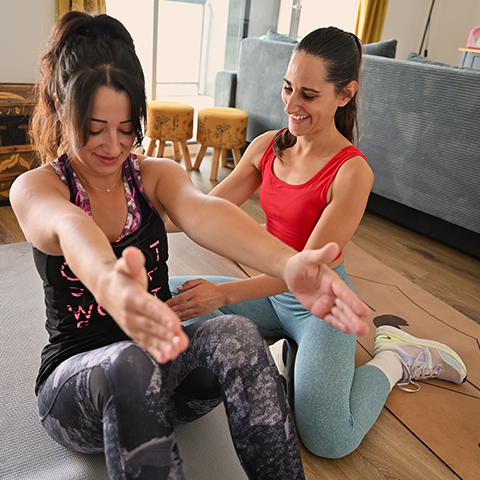
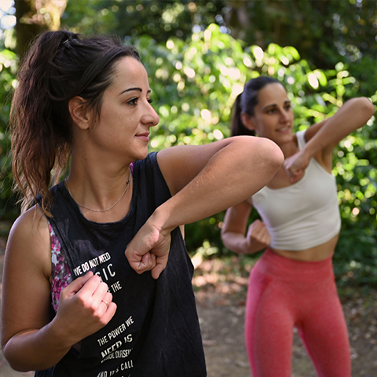
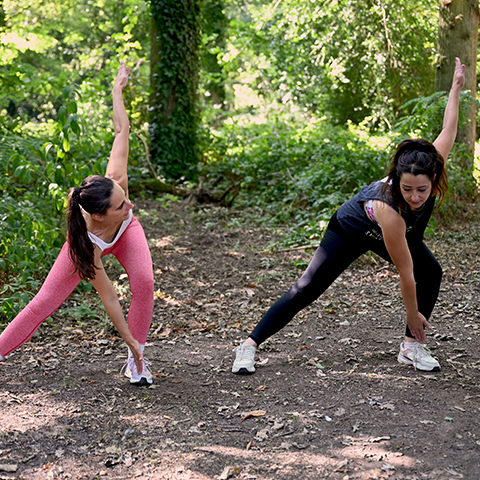

Jelyn Fit
Coaching
Coaching

Retrouve un corps plus mobile, plus léger et plus fort… à ton rythme
Depuis quelque temps, j’accompagne des personnes qui souhaitent retrouver confiance, mieux bouger, perdre du poids sans violence et soulager leurs douleurs articulaires.
Mon approche repose sur le mouvement adapté, une alimentation simple et apaisante, la gestion du stress et un suivi humain, sans jugement, sans pression.
Je ne suis pas magicienne, rien ne change en un claquement de doigts.
Mais, avec un cadre clair, un accompagnement régulier et des étapes bien dosées, tu verras ton corps se transformer, ton énergie revenir et ta mobilité s’améliorer semaine après semaine.
Un accompagnement personnalisé pour reprendre l’activité physique en sécurité, améliorer la mobilité, renforcer le corps sans douleur et retrouver de l’énergie au quotidien.

Le programme inclut 10 séances individuelles adaptées, un suivi hebdomadaire, un accompagnement continu et des recommandations ciblées pour bouger mieux et durablement.
Voir l'accompagnementUn accompagnement sur 12 semaines pour réduire les douleurs, restaurer la mobilité et retrouver une aisance corporelle durable.
Il combine séances individuelles hebdomadaires, suivi continu, programmes de mouvement et routines ciblées, ajustés en permanence selon l’énergie et l’évolution.
Voir l'accompagnementUn accompagnement sur 24 semaines pour une perte de poids progressive, stable et respectueuse du corps, sans brutalité.
Il associe séances individuelles, suivi régulier et programmes de mouvement évolutifs pour renforcer le corps et installer des habitudes durables.
Voir l'accompagnementUn accompagnement sur 36 semaines pour transformer durablement le rapport au corps, au mouvement et au mode de vie, avec une perte de poids progressive et maîtrisée.
Le programme articule séances individuelles, suivi approfondi et approche globale intégrant mobilité, renforcement, alimentation et gestion du stress sur le long terme.
Voir l'accompagnement
Un accompagnement vous intéresse ?
Que vous soyez prêt à commencer ou simplement en recherche
d'informations, je suis à votre écoute.
Discutons ensemble de vos besoins, c'est sans engagement, pour trouver
ce qui vous conviendra le mieux.